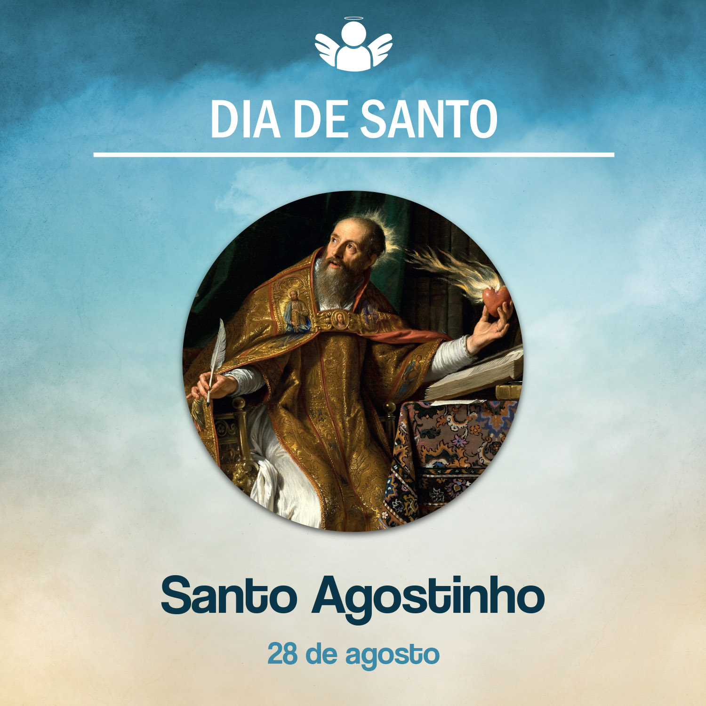

Santo Agostinho
28 de agosto de, 2020
Celebramos hoje a memória de Santo Agostinho. Quem é esse santo de que tanto ouvimos falar hoje?
Santo Agostinho nasceu em 13 de novembro de 354, em Tagaste, no norte da África. Seu pai, Patrício, era um pequeno proprietário, conselheiro municipal e, no leito de morte, converteu-se ao cristianismo. Sua mãe, Mônica, era de fé cristã e muito devota. Educou seus filhos na fé.
Aos 11 anos, Agostinho foi estudar na Escola de Madaura e passou a ter contato com a literatura latina e crenças pagãs. Desviou-se de sua fé e foi para outros caminhos. Passou então pelo maniqueísmo, ceticismo, o que causou grande preocupação a Mônica. Ela o acompanhou e manteve-se sempre em oração pela conversão do filho.
Ensinou Retórica em Cartago, Roma e Milão. Nesta última cidade, conheceu o bispo Santo Ambrósio, que o preparou ao catecismo e o batizou na noite de 24 para 25 de abril de 387. Estava com 32 anos de idade. Depois do falecimento de sua mãe, Agostinho retornou para a África. Retornando à fé cristã, ele passou a viver num monastério, consagrando-se à vida religiosa. Foi ordenado padre em 391 e, em 387, sagrado bispo de Hipona, África.
Com sua riquíssima produção teológica e filosófica de 113 obras, contribui muito para a Igreja até hoje. Aprofundando seu estudo nas escrituras e nos Santos Padres, deixou um grande legado ao cristianismo. É considerado um dos mais importantes teólogos de todos os tempos.
Em “Confissões”, Agostinho partilhou sua vida antes e depois de sua conversão, deixando um grande testemunho de sua fé. Também muitos sermões que escreveu foram de grande importância para o combate às heresias e cismas de seu tempo. Seus escritos ajudam até nossos dias na formação teológica e filosófica de pessoas em todo o mundo. Seus grandes textos são “Sobre a Trindade” e “Cidade de Deus”, sua obra-prima. Morreu em 28 de agosto de 430, em Hipona.
O que a vida de Agostinho nos inspira a viver hoje? Esse santo deixou-se ser trabalhado por Deus para ser um grande instrumento dele na compreensão da fé. Que, nos passos da vida de Santo Agostinho, possamos também nos colocar no caminho da conversão, num processo de mudança de vida, acolhendo a graça de Deus. E dizer, como ele, numa de suas “Confissões” para expressar esse momento da experiência de Deus após retornar à fé cristã: “Tarde te amei, beleza infinita, tarde te amei, beleza sempre antiga e sempre nova! Estavas comigo, e eu não estava contigo. Eis que habitavas dentro de mim, e eu te procuravas de fora!”.